Specifying Component Properties
The Properties view displays all the properties of the selected component.
Basic Component Properties
All components share a set of properties that you can specify in the Properties view.

Type
When you create an instance of a preset component, it has all the properties of the preset you used. If you realize later that another preset component with another set of default properties would be more suitable for your purposes, you can change the component type by double-clicking the Type field and entering the name of another preset component in the field.
If you have specified values for properties that are not supported by the new component type, Qt Design Studio offers to remove them for you. If you'd rather do this yourself, you can select the  (Actions) menu next to the property name, and then select Reset to remove the property values before trying again.
(Actions) menu next to the property name, and then select Reset to remove the property values before trying again.
ID
Each component and each instance of a component has an ID that uniquely identifies it and enables other components' properties to be bound to it. You can specify IDs for components in the ID field.
An ID must be unique, it must begin with a lower-case letter or an underscore character, and it can contain only letters, numbers, and underscore characters.
For more technical information about IDs, see The id Attribute.
To add a property alias that you can use from outside of the component, select  . You can use a menu item in the Actions menu to add property aliases for property values of child components.
. You can use a menu item in the Actions menu to add property aliases for property values of child components.
Name
The value of the Name field specifies the component name used in an annotation. It is a free-form text that descibes the component.
2D Geometry
Set the properties in the Geometry - 2D section to determine the position and size of a component.
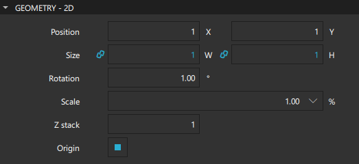
In the Position group, you can set the position of a component on the x and y axis. The position of a component in the UI can be either absolute or relative to other components. For more information, see Scalable Layouts.
In the 2D space, the z position of a component determines its position in relation to its sibling components in the component hierarchy. You can set the z position in the Z stack field.
In the Size group, you can set the width and height of a component. You can also use the resize cursor to resize 2D components in the 2D view or the scaling gizmo to scale 3D components in the 3D view. The values in the X and Y fields change accordingly.
The component size and position can also be managed automatically when using layouts.
The width and height of the root component in a component file determine the size of a component. The component size might also be zero (0,0) if its final size is determined by property bindings. For more information, see Previewing Component Size.
Resetting Component Position and Size
To return a component to its default position after moving it, right-click in the 2D or Navigator view and select Edit > Reset Position. To return it to its default size, right-click in the 2D or Navigator view and select Edit > Reset Size.
Managing 2D Transformations
You can assign any number of transformations, such as rotation and scaling, to a component. Each transformation is applied in order, one at a time.
In the Origin field, select the origin point for scaling and rotation.
Set the scale factor in the Scale field. A value of less than 1.0 makes the component smaller, whereas a value greater than 1.0 makes it larger. A negative value causes the component to be mirrored in the 2D view.
In the Rotation field, specify the rotation of the component in degrees clockwise around the origin point.
Alternatively, you can move, resize, or rotate components by dragging them in the 2D view.
For more information about transforming 3D components, see Managing 3D Transformations and the 3D view.
Visibility
Set the properties in the Visibility section to show and hide components.
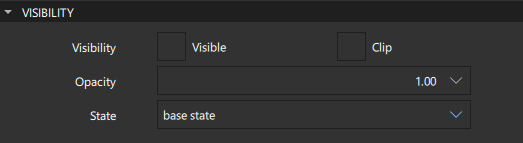
Deselect the Visible check box to hide a component and all its child components, unless they have explicitly been set to be visible. This might have surprise effects when using property bindings. In such cases, it may be better to use the Opacity property instead.
If this property is disabled, the component will no longer receive mouse events. However, it will continue to receive key events and will retain the keyboard focus events if the Enabled check box in the Advanced section is selected.
The visibility value is only affected by changes to this property or the parent's visible property. It does not change, for example, if this component moves off-screen, or if the opacity changes to 0.
In the Opacity field, specify the opacity of a component as a number between 0.0 (fully transparent) and 1.0 (fully opaque). The specified opacity is also applied individually to child components, sometimes with surprising effects.
Changing a component's opacity does not affect whether the component receives user input events.
You can animate the opacity value to make a component fade in and out.
If the Clip check box is selected, the component and its children are clipped to the bounding rectangle of the component.
in the State field, select the state to change the value of a property in that state.
Picking Colors
You can define color properties for some of the components in the Properties view by using the color picker. Open the color picker by clicking, for example, the color field of the Fill color or Border color property.
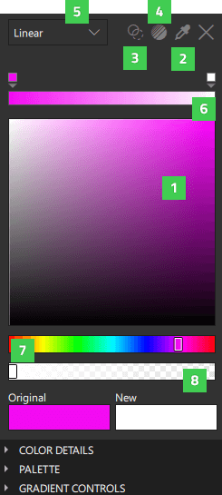
To select a new color, click the color of your choice in the color selector (1), or click the Eye Dropper icon (2) to be able to select any color visible in your screen to use further in your project.
The Original field displays the original color of the component, while the New field displays the current color.
Make the color fully transparent by clicking the Transparent icon (3).
To use preset web gradients, click the Gradient Picker icon (4).
Use the dropdown menu (5) to determine the color fill type you wish to use. You can choose a solid or a gradient color. Available gradient types vary between components. The items listed in light grey are not available for the selected component.
The current color bar (6) shows gradient and gradient stops when a gradient is selected.
Use the hue slider (7) or the alpha slider (8) to further define a new color.
Click the X icon to close the color picker.
Picking Gradients
A gradient is defined by two or more colors which are blended seamlessly. The colors are specified as a set of gradient stops, each of which defines a position on the gradient bar from 0.0 to 1.0 and a color. Drag the gradient stops along the gradient bar to set their values. Select the arrow below a gradient stop to see its value as a number.
To add gradient stops, move the cursor over the gradient bar and point at it with the finger-shaped cursor. To remove gradient stops, pull them away from the gradient line.
Set the direction of the gradient by selecting Horizontal or Vertical in the Gradient Controls section of the color picker.
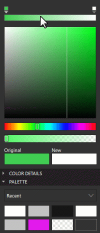
Calculating gradients can be computationally expensive compared to the use of solid color fills or images. Consider using gradients only for static components in a UI.
Setting Gradient Properties
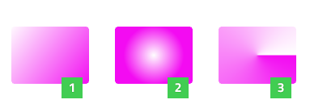
You can select Linear (1), Radial (2), or Conical (3) as the color fill type. After selecting one of the gradient types, you can define the gradient properties for Qt Quick Studio Components in the Gradient Controls section of the color picker.
Linear Gradients
A linear gradient interpolates colors between start and end points. Outside these points, the gradient is either padded, reflected, or repeated depending on the spread type. Set start and end points for horizontal and vertical interpolation in the X1, X2, Y1, and Y2 fields.
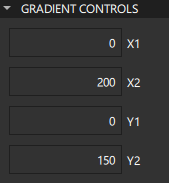
Radial Gradients
A radial gradient interpolates colors between a focal circle and a center circle. Points outside the cone defined by the two circles will be transparent. Outside the end points, the gradient is either padded, reflected, or repeated depending on the spread type.
You can set the center and focal radius in the Center radius and Focal radius fields. For simple radial gradients, set Focal radius to 0.
You can set the center and focal points in the CenterX, CenterY, FocalX, and FocalY fields. To specify a simple radial gradient, set the FocalX and FocalY to the value of CenterX and CenterY, respectively.
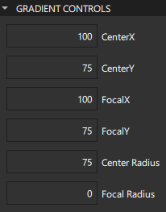
Conical Gradients
A conical gradient interpolates colors counter-clockwise around a center point. Set the horizontal and vertical center point of the gradient in the CenterX and CenterY fields and the start angle in the Angle field.
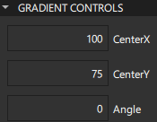
Selecting Web Gradients
The Gradient Picker enables you to specify WebGradients for components that support QGradient.
To open the Gradient Picker, select the Gradient Picker Dialog icon (4).
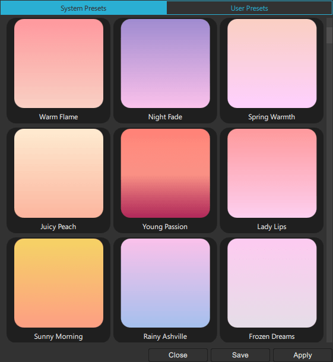
To apply a gradient on the selected component, select Apply.
To save a gradient in the User Presets tab, select Save.
By default, a linear gradient is used, but you can select another supported gradient type in the dropdown menu (5) of the color picker.
Color Details
Further define the colors in your project by modifying the properties in the Color Details section of the color picker.
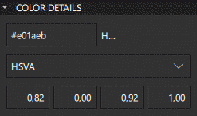
Use the Hex property to enter the Hex value of a new color manually. Define exact values for red, green, and blue using the Hex property to create different shades for the colors used in the project.
The default color value mode is HSVA (hue-saturation-value-alpha). Use the dropdown menu to change the color value mode to RGBA (red-green-blue-alpha) or HSLA (hue-saturation-lightness-alpha). Hue is defined in degrees which refer to different colors of the color wheel. Saturation modifies the intensity of the color. Value determines the brightness of the color. In HSLA Lightness signifies the amount of white or black blended with the color.
Palette
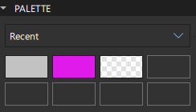
Use the dropdown menu in the Palette section of the color picker to change the Palette type. Recent displays the recent colors used in the project, while Favorites shows the colors you have added to your collection of favorite colors. You can add colors to Favorites by right-clicking the color thumbnail for Original, New, or in Palette > Recent colors and selecting Add to Favorites.
Click one of the Palette color thumbnails to select it as the new color.
Specifying Developer Properties
In the Advanced and Layer sections of the Properties view, you can manage the more advanced properties of components that are inherited from the Item component and that are mostly used by application developers.
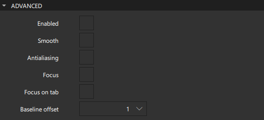
Select the Smooth check box to activate smooth sampling. Smooth sampling is performed using linear interpolation, while non-smooth sampling is performed using the nearest neighbor. Because smooth sampling has minimal impact on performance, it is activated by default.
Antialiasing is used to make curved lines smoother on the screen. Select the Antialising check box to turn on antialiasing.
The value of the Baseline offset specifies the position of the component's baseline in local coordinates. The baseline of a Text component is the imaginary line on which the text sits. Controls containing text usually set their baseline to the baseline of their text. For non-text components, a default baseline offset of 0 is used.
Managing Mouse and Keyboard Events
Select the Enabled check box to allow the component to receive mouse and keyboard events. The children of the component inherit this behavior, unless you explicitly set this value for them.
You can enable the Focus check box to specify that the component has active focus and the Focus on tab check box to add the component to the tab focus chain. The tab focus chain traverses components by first visiting the parent, and then its children in the order they are defined. Pressing Tab on a component in the tab focus chain moves keyboard focus to the next component in the chain. Pressing back tab (usually, Shift+Tab) moves focus to the previous component.
Using Layers
Qt Quick makes use of a dedicated scene graph that is then traversed and rendered via a graphics API such as OpenGL ES, OpenGL, Vulkan, Metal, or Direct 3D. Using a scene graph for graphics rather than the traditional imperative painting systems, means that the scene to be rendered can be retained between frames and the complete set of primitives to render is known before rendering starts. This opens up for a number of optimizations, such as batch rendering to minimize state changes and discarding obscured primitives.
For example, a UI might contain a list of ten items where each item has a background color, an icon and a text. Using traditional drawing techniques, this would result in 30 draw calls and a similar amount of state changes. A scene graph, on the other hand, could reorganize the primitives to render such that all backgrounds are drawn in one call, then all icons, then all the text, reducing the total amount of draw calls to only 3. Batching and state change reduction like this can greatly improve performance on some hardware.
You need a basic understanding of how components are rendered to be able to set layer properties. Rendering is described in Qt Quick Scene Graph Default Renderer.
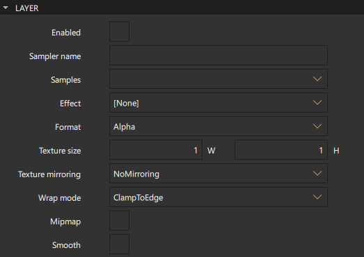
Components are normally rendered directly into the window they belong to. However, by selecting the Enabled check box in the Layer section, you can delegate the component and its entire subtree into an offscreen surface. Only the offscreen surface, a texture, will then be drawn into the window. For more information, see Item Layers.
When layering is enabled, you can use the component directly as a texture, in combination with the component you select in the Effect field. Typically, this component should be a shader effect with a source texture specified. You can use the effects in Components > Qt Quick Studio Effects that are based on the components in the Qt Graphical Effects module.
To enable the component to pass the layer's offscreen surface to the effect correctly, the Sampler name field is set to the source property of the texture.
Note that when a component's layer is enabled, the scene graph will allocate memory in the GPU equal to width x height x 4. In memory constrained configurations, large layers should be used with care. Also, a component using a layer cannot be batched during rendering. This means that a scene with many layered components may have performance problems.
By default, multisampling is enabled for the entire window if the scenegraph renderer is in use and the underlying graphics API supports it. By setting the value in the Samples field, you can request multisampling for a part of the scene. This way, multisampling is applied only to a particular subtree, which can lead to significant performance gain. Even then, enabling multisampling can be potentially expensive regardless of the layer's size, as it incurs a hardware and driver dependent performance and memory cost. If support for multisample renderbuffers and framebuffer blits is not available, the value is silently ignored.
The value of the Format field specifies the internal OpenGL format of the texture. Depending on the OpenGL implementation, it might allow you to save some texture memory. However, use the RGB and Alpha values with caution because the underlying hardware and driver might not support them.
In the Texture mirroring field, specify whether the generated OpenGL texture should be mirrored by flipping it along the x or y axis. Custom mirroring can be useful if the generated texture is directly accessed by custom shaders. If no effect is specified for the layered component, mirroring has no effect on the UI representation of the component.
The component will use linear interpolation for scaling if the Smooth check box is selected. To use a mipmap for downsampling, select the Mipmap check box. Mipmapping may improve the visual quality of downscaled components. For mipmapping of single Image components, select the Mipmap check box in the image properties, instead.
To use a texture with a size different from that of the component, specify the width and height of the texture in the Texture size field.
The Wrap mode defines the OpenGL wrap modes associated with the texture. You can clamp the texture to edges or repeat it horizontally and vertically. Note that some OpenGL ES 2 implementations do not support the Repeat wrap mode with non-power-of-two textures.
Copying and Pasting Formatting
You can copy property values from a component and paste them to one or several other components. The values are applied if the target components have those particular properties.
To copy property values from a component, right-click it in the 2D or Navigator view and select Edit > Copy Formatting.
To apply the values to one or several other components, select them in the Navigator or 2D view, and then right-click and select Edit > Apply Formatting.
Editing Properties Inline
You can double-click components in the 2D view to edit their text, color, or source properties inline. Because you can specify several of these properties for some components, such as Text Edit, you can also right-click components to open the inline editors from the context menu.
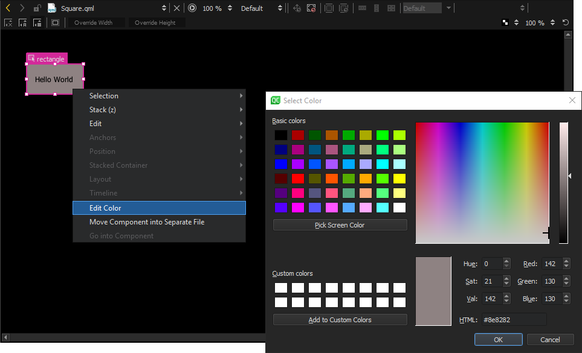